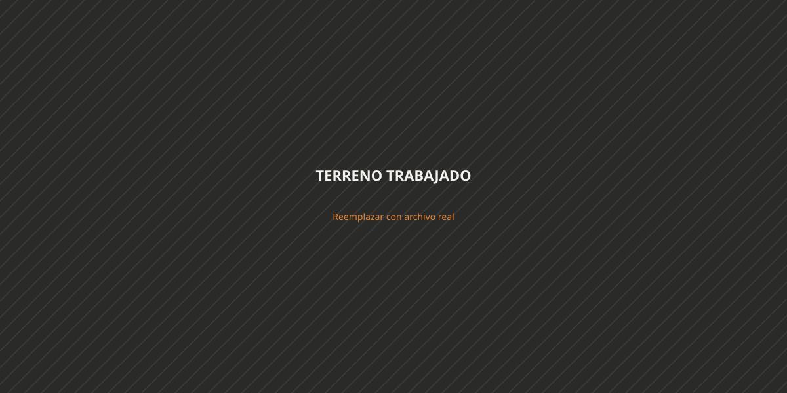
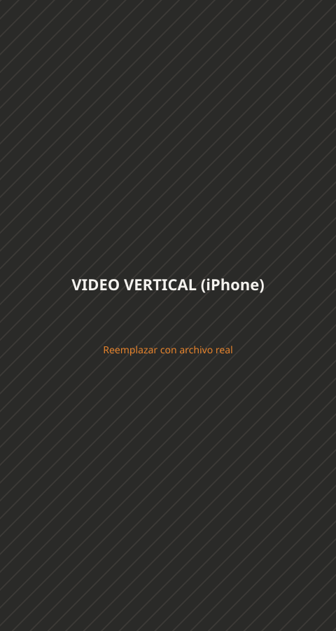
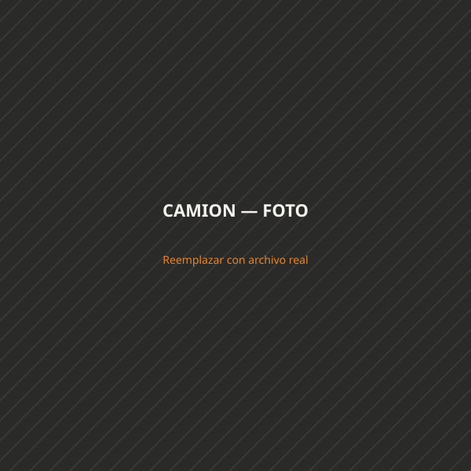

Suelo Vial · desde 2008
Impulsamos la industria de la construcción a través de obras viales y movimiento de suelos de alta precisión, con equipamiento propio de última generación y un equipo capacitado para garantizar calidad y eficiencia en cada etapa del proyecto.
Contamos con equipamiento propio de última generación y un equipo altamente capacitado para garantizar la máxima calidad y eficiencia en cada etapa del proyecto.
Nuestro compromiso con la seguridad, la responsabilidad ambiental y la excelencia operacional nos consolida como un socio estratégico de absoluta confianza.
Del desmonte a la obra terminada: cubrimos cada etapa del movimiento de suelo.
Equipamiento propio
Cada proyecto avanza con maquinaria propia, mantenida y operada por nuestro equipo — sin depender de terceros para cumplir los tiempos de obra.
Consultar disponibilidadRegistro real de trabajo en terreno.



Contanos qué necesitás y te respondemos con un presupuesto.